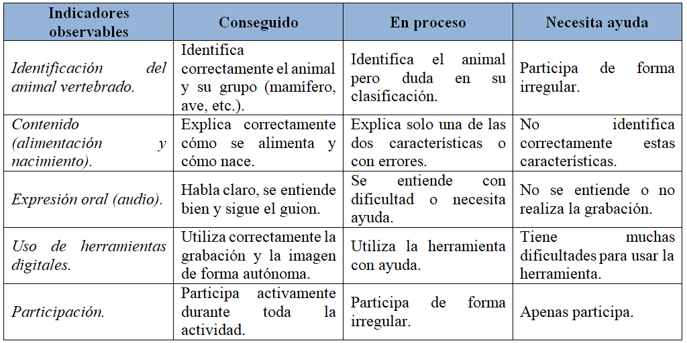

Instrumento de evaluación 1. Rúbrica del libro digital (producto final).
Esta rúbrica se utilizará en la última sesión para evaluar el producto fina, es decir, la creación de un libro digital colaborativo acerca de los animales vertebrados utilizando la herramienta digital “Book Creator”. Mediante esta rúbrica, se evaluará la identificación del animal vertebrado, la descripción de su alimentación y de su forma de nacer, la expresión oral utilizada para realizar la descripción, la utilización de la herramienta digital para grabar y adjuntar la imagen y la participación activa en la actividad.
Los datos se obtienen a través de la observación del docente. El mismo observará si el contenido de cada página del libro es correcto, si el audio grabado por el alumnado es adecuado y si el alumnado ha tenido una participación activa durante la elaboración. Los resultados obtenidos permitirán evaluar el grado de adquisición de los criterios 2.5.a., 3.2.a. y 1.1.a. Además, se podrán detectar dificultades en la expresión oral y en la comprensión. El feedback que recibirá el alumnado es sencillo mediante refuerzo positivo y propuestas de mejora como hablar más alto, proporcionar más información…

Instrumento de evaluación 2. Lista de cotejo de la ficha.
Esta lista de cotejo será utilizada para valorar la ficha en papel sobre la clasificación de animales vertebrados. Este instrumento se utilizará tras la realización de la ficha en la sesión 1. En ella se evaluará la clasificación correcta de los animales vertebrados, la identificación de su alimentación y de su forma de nacer, la presentación y limpieza del trabajo y la comprensión de la tarea.
Para obtener los datos, el docente revisa la ficha empleando unos ítems muy sencillos que detallo a continuación. Los resultados obtenidos permitirán detectar errores en la clasificación de los animales y en su alimentación o forma de nacer, identificar el esfuerzo del alumnado y adecuar las enseñanzas en las próximas sesiones. El feedback que recibirá el alumnado se centrará en la corrección individual de la ficha, la explicación grupal de los errores más comunes y en el refuerzo para el alumnado con dificultades.